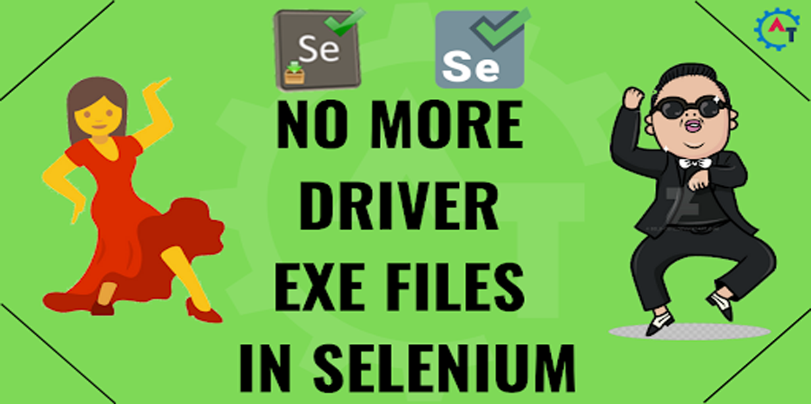
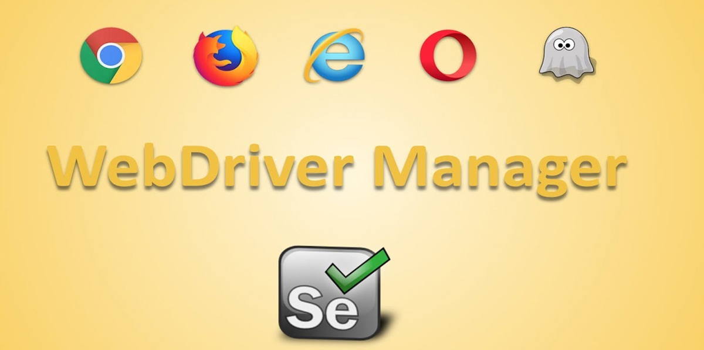

All projects
Publication
MaxSoft WebDriver Manager
Lets quality and automation engineers launch any browser on any operating system with a single line of code — no driver downloads or setup.
- Windows, Linux and macOS
- Java
- 2020


Highlights
- Zero configuration
- All major browsers supported out of the box
- Works on Windows, macOS and Linux
- Simple, one-line API
Built with
JavaSeleniumWebDriverManagerJUnitMaven
Need something like this?
I design and build test automation tools and frameworks for teams. Let's talk about yours.